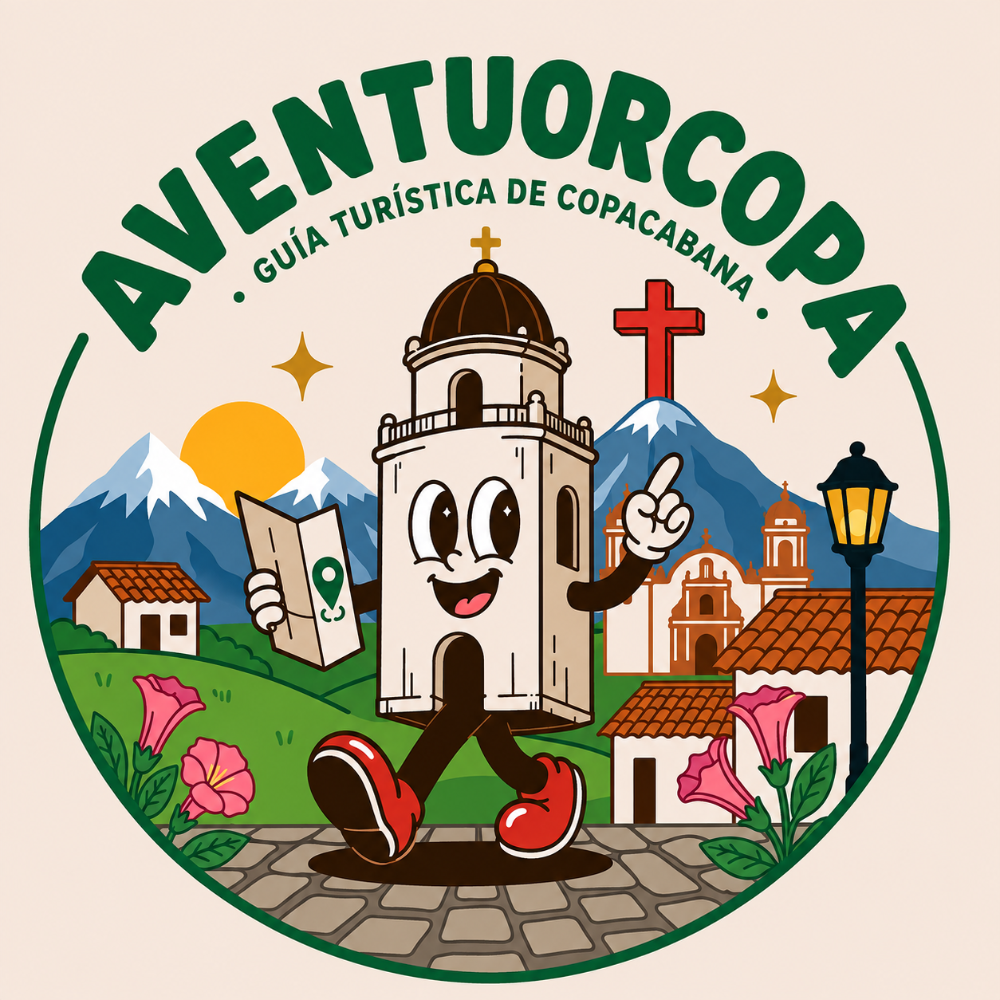

Baja
Sendero Piedras Blancas
Caminata suave junto a la quebrada, con andenes, bancas y cebaderos de aves.
Consejo
Recórrelo de día, verifica el tramo habilitado y prefiere ir acompañado.

Descubre nuevas aventuras
Recomendaciones — Aventourcopa
Una guía para elegir tu plan: caminar, conocer su historia, descansar en familia, hacer deporte o probar sabores locales.
Esta guía orienta, pero no confirma horarios, tarifas, disponibilidad, estado de senderos ni permisos. Verifica siempre antes de ir. Versión de septiembre de 2026.
Filtra por tipo de plan y abre «Consejo» en cada tarjeta para saber cómo prepararte.
Caminata suave junto a la quebrada, con andenes, bancas y cebaderos de aves.
Recórrelo de día, verifica el tramo habilitado y prefiere ir acompañado.
Café, aves, plantas, agua y gastronomía local de la mano de anfitriones rurales.
Reserva antes: la información oficial es de 2017 y puede haber cambiado.
Senderismo para respirar aire limpio y disfrutar del paisaje rural.
Aún faltan datos de inicio, distancia y dificultad: consúltalos con turismo.
Torrente sobre un peñasco en la vereda El Zarzal-La Luz, con acceso desde el km 18 de la Autopista Norte.
Solo para contemplar y fotografiar: no te bañes ni trepes por las rocas.
Ascenso de montaña de dificultad extrema, pensado para visitantes preparados.
Solo con guía, buen clima, equipo y señal: no es para improvisar.
Ecozarzales y Piedras Blancas son buenos puntos para ver aves y biodiversidad.
No reproduzcas cantos ni alimentes a la fauna; usa ropa discreta.
El mejor punto de partida: zonas verdes, quiosco, comercio, cafés y vida cotidiana.
Pregunta por retretas o eventos programados.
Templo de estilo español en bloques de piedra, con tres naves, campanario y reloj.
Evita recorrerlo como turista durante la misa.
A unos 2 km del centro: arquitectura, confesionario y viacrucis tallado en madera. Allí se ofició la primera misa del Valle de Aburrá, en 1541.
Pide permiso para fotografiar el interior.
Mirador hacia Bello y Copacabana, al que se sube por la vereda El Cabuyal o por un sendero ecológico.
Confirma que el sendero esté habilitado y lleva agua. Fecha tradicional: 3 de mayo.
Colina con vista al centro urbano y ruta de memoria sobre familias y oficios.
Silencio y respeto; pide autorización para fotografiar sepulturas.
Antigua escuela de niñas de Cuatro Esquinas (1988): exposiciones, talleres y agenda artística.
Consulta la agenda y la disponibilidad antes de ir.
16 hectáreas en la vereda Ancón: piscinas, toboganes, lagos, senderos, cascada y canchas.
Revisa tarifas, horarios y reglamento; supervisa siempre a los menores.
Parque, comida local, un paseo corto por el centro y una actividad cultural.
Deja pausas, sombra y agua; no mezcles jornada acuática con caminata exigente.
Sede del Suramericano de Natación 2010: piscina olímpica y tribuna para más de 600 personas.
No asumas acceso libre: confirma horarios, tarifas y carriles.
Las montañas y vías rurales atraen ciclistas, aunque aún no hay una ruta oficial verificada.
Casco, luces, kit mecánico y guía; cuidado con el tráfico.
Fiestas de la Naranja, de la Juventud y el Deporte, patronales (15 de agosto), Semana Santa y aniversario del 8 de septiembre.
Las fechas cambian cada año: confírmalas antes de viajar.
Recorridos de memoria oral por el centro, los barrios y las veredas con anfitriones locales.
Pide consentimiento antes de fotografiar o grabar.
Restaurantes, panaderías, cafés y emprendimientos: prioriza lo local y pregunta por ingredientes.
Consulta alergias, horarios y medios de pago directamente.
Siete planes listos según el tiempo y la energía que tengas.
Empieza en el Parque Principal, visita la parroquia de la Asunción, recorre la Casa de la Cultura, sube al cementerio mirador y cierra con café o comida local. Ideal para una primera visita.
Combina la Asunción, San Juan de la Tasajera y el Santuario de la Santa Cruz, y conversa sobre el título «Fundadora de Pueblos». Verifica horarios de los templos y el estado del sendero.
Camina el sendero Piedras Blancas, descansa en un tramo permitido y completa la tarde en el centro. Si observas aves, usa guía y no reproduzcas sonidos.
Reserva Ecozarzales o una experiencia rural vigente: senderismo, café, aves, gastronomía y conversación con anfitriones. No llegues sin reserva a fincas privadas.
Dedica el día a Las Ballenitas y, si queda energía, suma una visita corta al centro. Consulta edades, reglamento, costos y servicios incluidos.
Morrón de la Sierra o un circuito de bosques de Piedras Blancas con guía experimentado. Lleva agua, comida, impermeable, calzado de agarre y protector solar. No lo mezcles con actividades acuáticas.
Consulta disponibilidad en Cristo Rey y en las canchas de Las Ballenitas, reserva, practica y cierra con comida local. El acceso no está garantizado.
Cinco recordatorios para disfrutar sin riesgos y cuidar el territorio.
Confirma el estado de la vía, el clima, los horarios y si el lugar está abierto.
No salgas solo, informa tu itinerario, lleva agua y comunicación, usa calzado adecuado y regresa antes de oscurecer.
Permanece en senderos autorizados, no extraigas flora ni fauna, no dejes residuos, no hagas fogatas y no entres a predios privados.
Pregunta por el ancho y la superficie del sendero, las pendientes, los baños y el acompañamiento. La etiqueta «familiar» no basta.
Contrata prestadores formales, pregunta por seguros y revisa el Registro Nacional de Turismo cuando aplique.